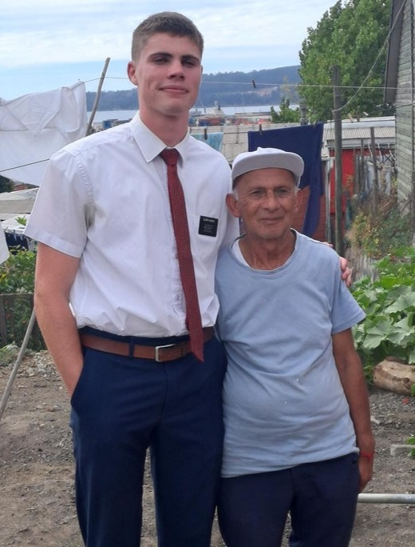

Work and Service Experience
Go to Work Experience, Language Skills and Awards
Mission Chile Concepcion 2022-2024
I had the wonderful priveledege of serving a full-time mission in Chile where I had the oppoetunitiy to most importantly share the Restored Gospel of Jesus Christ and help other feel the love of God. I also had the experience of leading and trainging other missionaries, and mastering the Spnaish Language as i was fully emmersed in the Chilean culture. This two year experience changed who I am as a person, and will forever be grateful for the opportunity!

Tableau Graph showing membership-growth of the Church of Jesus Christ of Latter-day Saints in different countries around the world.
Previous Jobs
-
Dura Edge, Business Development, Nov 2024
Collection of data for customer leads that had shown interest in buying landscaping accessories via website contact forms. Captured lead data into Excel spreadsheet for efficient processing. Called customers via telephone to follow up on their interest and encourage a purchase. Recorded all order details into Excel spreadsheet and handed over to business owner for further processing.
-
Sherwell Cupboards, Kitchen Fitter, Oct 2024 - Nov 2024
Kitchen and cupboard installations, including careful and precise hands on labour such as taking measurements, cutting, drilling, sanding, glueing, and assembling high-quality cupboards. The Church of Jesus Christ of Latter-day Saints, Missionary, Sep 2022 - Sep 2024 Served a full time mission in the Chile Concepcion mission. Shared the gospel, community service, training and mentoring other missionaries. Acted as a trainer, district leader and zone leader.
-
K5 Business, Computer Technician, June 2022 - Aug 2022
Set up new laptops including the installation of various business software applications and user profile configuration. Also included formatting and reinstallation of older laptops to reissue to new users. Assisted with ad hoc technical support tasks as instructed.
-
Talloula Bothas Hill, Waitron, April 2022 - May 2022
Worked as a waitron for a wedding venue, ensuring guests had a pleasant and enjoyable experience. Professional and efficient order-taking, serving food and drinks, cleaning and generally being available to assist where needed.
-
Language Experience:
- English: Native Language
- Spanish: Professional Working Proficiency, 2-year Spanish-speaking mission
- Afrikaans: Elementary Proficiency, Grades 3 to 12
-
Awards in High School
- Cultural Honors: Hilton College
- Academic Half Colors: Hilton College
-
Leadership in School
- Tenor Voice-group Leader: Drakensburg Boys Choir School
- Academic and Sports Prefect: Drakensburg Boys Choir School
- Head of Choir: Hilton College
- Sustainability Commitee: Hilton College